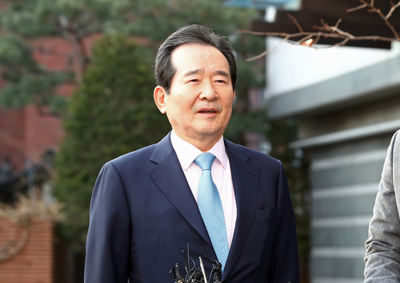

정세균 국무총리가 8일 “서민주거안정을 위해 만들어진 한국토지주택공사(LH) 임직원 등 공직자의 신도시 투기 의혹은 기관 설립정신을 정면으로 위배했다”면서 “사생결단의 각오로 파헤쳐 비리행위자를 패가망신시켜야 할 것”이라고 강하게 지시했다. 정 총리는 또 국세청, 금융위원회 등 관계기관이 참여하는 ‘정부합동특별수사본부’를 설치해 차명 거래 등 불법 투기행위를 철저히 규명하라고 강조했다.

정 총리는 이날 정부서울청사에서 남구준 경찰청 국가수사본부장에게 ‘부동산 투기 특별수사단 운영방안’을 보고 받은 뒤 “위법 이전에 국민에 대한 배신 행위”라며 이렇게 밝혔다.
정 총리는 남 본부장에게 “정부합동조사단 조사 결과를 통보받으면 지체 없이 한 줌의 의혹도 남기지 않고 철저히 수사하라”고 주문했다.
정부합동조사단의 국토교통부와 LH 직원을 대상으로 한 3기 신도시 관련 토지거래행위는 오는 11일 정 총리의 1차 브리핑에서 발표될 전망이다. 조사단은 조사 결과를 국수본에 즉시 수사 의뢰하고, 국수본에서는 현재 고발된 사례와 함께 조사단이 수사 의뢰하는 사항을 신속하고 철저하게 수사하기로 했다.